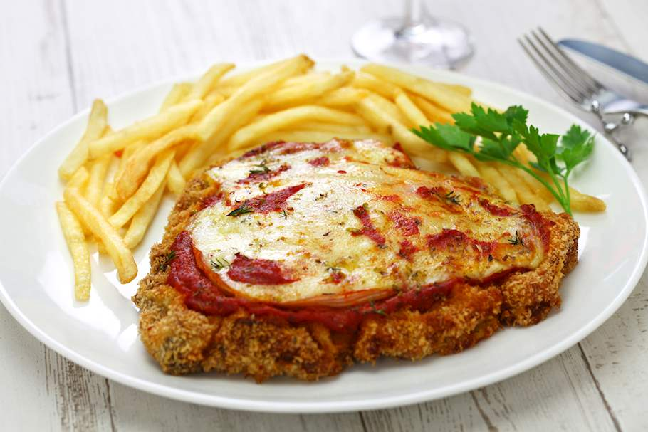

Milanesa a la Napolitana

The Milanesa a la Napolitana is a typical dish of Argentina that has its origin in the influence of Italian immigration.
Ingredients
- 4 milanesa-style cutlets (they may come this way, if not, slice top sirloin lengthwise into slices about 1/3 inch thick)
- 2 eggs
- 1 cup (110g) breadcrumbs
- 2 tbsp dried parsley
- salt, to taste
- pepper, to taste
- oil, for frying
- 8-10 slices of prosciutto
- 1 cup (260g) tomato sauce
- 2 cups (225g) mozzarella, sliced
Steps
- Beat the cutlets to the desired thickness.
- Whisk the eggs, parsley, salt, and pepper in a large shallow container, pour the breadcrumbs on a large, flat plate.
- First, dip the cutlets into the egg mixture, and then coat them with breadcrumbs.
- Arrange the breaded cutlets on a plate, then place the plate in the refrigerator between several hours to up to overnight.
- Pour a half an inch of oil into the pan, and then heat it over medium-high heat.
- Fry the cutlets in oil, in batches, 5-7 minutes on one side, and then for another five minutes when you flip them, until golden. Transfer the finished cutlets onto paper towels to drain.
- Arrange the cutlets in a baking tray.
- Top each first with prosciutto, one to two slices, then spread them with a 1/4 cup (65g) of tomato sauce, and lastly, top with mozzarella.
- Preheat the broiler, then place the baking tray under it for 5-9 minutes, then serve.